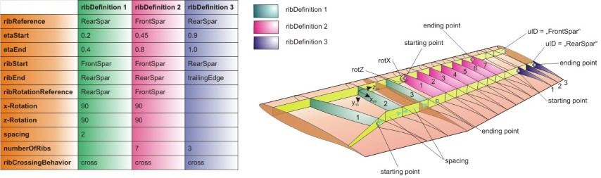

complexType · extension complexBaseType · sequence
Positioning of a set of wing ribs
The ribsPositioning type allows the definition of a set of ribs which is distributed over a specified spanwise area.
The positions of the ribs are defined by placing the ribs on a reference line on the wing (ribReference). The inner and the outer beginning of the rib set is defined using etaStart and etaEnd. The position of the forward and rear end of the ribs is defined by ribStart and ribEnd. The orientation of the ribs is defined in ribRotation. The number of ribs of the current rib set is either defined by ribNumber or by spacing.
Three examples how ribs can be placed on the wing are illustrated in the picture below. For more detailed information, please refer to the description of each parameter.

| Name | Type | Constraints | Use | Default | Description |
|---|---|---|---|---|---|
@externalDataDirectory | xsd:string | optional | Directory of the external data file | ||
@externalDataNodePath | xsd:string | optional | Path of the node inside the external data file | ||
@externalFileName | xsd:string | optional | Name of the external data file |
| Name | Type | Constraints | OccurrenceHow often the element may appear at this place. The schema writes it as minOccurs and maxOccurs on the declaration. | Default | Description |
|---|---|---|---|---|---|
| sequenceThe children below must appear in exactly this order. Each may repeat as often as its own occurrence allows. | |||||
| choiceExactly one of the alternatives below may appear, unless the occurrence next to this line says otherwise. | |||||
startEtaXsiPoint | etaXsiPointType | [1..1] required | Start of the rib defined in eta-xsi coordinates of a reference plane | ||
startCurvePoint | curvePointType | [1..1] required | Start of the rib by a point on a reference curve, such as a spar, but not an explicit sparPosition | ||
startSparPositionUID | stringUIDBaseType | [1..1] required | Location of the beginning of the rib using a specific sparPosition | ||
| choiceExactly one of the alternatives below may appear, unless the occurrence next to this line says otherwise. | |||||
endEtaXsiPoint | etaXsiPointType | [1..1] required | End of the rib defined in eta-xsi coordinates of a reference plane | ||
endCurvePoint | curvePointType | [1..1] required | End of the rib defined by a point on a reference curve such as a spar, but not an explicit sparPosition | ||
endSparPositionUID | stringUIDBaseType | [1..1] required | Location of the end of the rib using a specific sparPosition | ||
ribStart | stringBaseType | [1..1] required | Forward beginning of the ribs. It can either be a sparUID or "trailingEdge" or "leadingEdge". | ||
ribEnd | stringBaseType | [1..1] required | Backward ending of the ribs. It can either be a sparUID or "trailingEdge" or "leadingEdge". | ||
| choiceExactly one of the alternatives below may appear, unless the occurrence next to this line says otherwise. | |||||
spacing | doubleBaseType | [1..1] required | The spacing of the ribs defines the distance between two ribs, measured on the ribReferenceLine. First rib is placed at etaStart. | ||
numberOfRibs | integerBaseType | [1..1] required | Number of ribs in this ribSet. First rib is at etaStart on the referenceLine, last rib is at etaEnd. The spacing is constant on the ribReferenceLine. | ||
ribReference | stringBaseType | [1..1] required | The ribReference is the reference line for the computation of the rib set spacing. It can either be a sparUID or "trailingEdge" or "leadingEdge" | ||
ribCrossingBehaviour | stringBaseType | 2 values | [1..1] required | Behaviour of the ribs when crossing other structural elements | |
ribRotation | ribRotationType | [1..1] required | Rotation | ||
cpacs/vehicles/aircraft/model/wings/wing/componentSegments/componentSegment/structure/ribsDefinitions/ribsDefinition/ribsPositioningcpacs/vehicles/aircraft/model/wings/wing/componentSegments/componentSegment/controlSurfaces/leadingEdgeDevices/leadingEdgeDevice/structure/ribsDefinitions/ribsDefinition/ribsPositioningcpacs/vehicles/aircraft/model/wings/wing/componentSegments/componentSegment/controlSurfaces/trailingEdgeDevices/trailingEdgeDevice/structure/ribsDefinitions/ribsDefinition/ribsPositioningcpacs/vehicles/aircraft/model/wings/wing/componentSegments/componentSegment/controlSurfaces/spoilers/spoiler/structure/ribsDefinitions/ribsDefinition/ribsPositioningcpacs/vehicles/rotorcraft/model/wings/wing/componentSegments/componentSegment/structure/ribsDefinitions/ribsDefinition/ribsPositioningcpacs/vehicles/rotorcraft/model/wings/wing/componentSegments/componentSegment/controlSurfaces/leadingEdgeDevices/leadingEdgeDevice/structure/ribsDefinitions/ribsDefinition/ribsPositioningcpacs/vehicles/rotorcraft/model/wings/wing/componentSegments/componentSegment/controlSurfaces/trailingEdgeDevices/trailingEdgeDevice/structure/ribsDefinitions/ribsDefinition/ribsPositioningcpacs/vehicles/rotorcraft/model/wings/wing/componentSegments/componentSegment/controlSurfaces/spoilers/spoiler/structure/ribsDefinitions/ribsDefinition/ribsPositioningcpacs/vehicles/rotorcraft/model/rotorBlades/rotorBlade/componentSegments/componentSegment/structure/ribsDefinitions/ribsDefinition/ribsPositioningcpacs/vehicles/rotorcraft/model/rotorBlades/rotorBlade/componentSegments/componentSegment/controlSurfaces/leadingEdgeDevices/leadingEdgeDevice/structure/ribsDefinitions/ribsDefinition/ribsPositioningcpacs/vehicles/rotorcraft/model/rotorBlades/rotorBlade/componentSegments/componentSegment/controlSurfaces/trailingEdgeDevices/trailingEdgeDevice/structure/ribsDefinitions/ribsDefinition/ribsPositioningcpacs/vehicles/rotorcraft/model/rotorBlades/rotorBlade/componentSegments/componentSegment/controlSurfaces/spoilers/spoiler/structure/ribsDefinitions/ribsDefinition/ribsPositioning| Type | Name |
|---|---|
wingRibsDefinitionType | ribsPositioning |